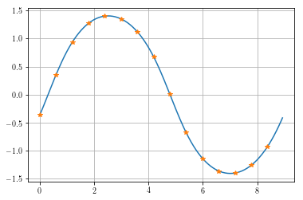
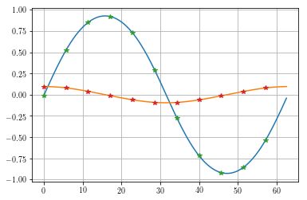
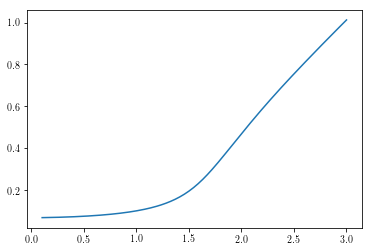

Duffing Oscillator Solution- State Space Form¶
In [2]:
%matplotlib inline
%load_ext autoreload
%autoreload 2
import scipy as sp
import numpy as np
import matplotlib.pyplot as plt
import mousai as ms
from scipy import pi, sin
The autoreload extension is already loaded. To reload it, use:
%reload_ext autoreload
In [3]:
# Test that all is working.
# f_tol adjusts accuracy. This is smaller than reasonable, but illustrative of usage.
t, x, e, amps, phases = ms.hb_time(ms.duff_osc, sp.array([[0,1,-1]]), .7, f_tol = 1e-12)
print('Equation errors (should be zero): ',e)
print('Constant term of FFT of signal should be zero: ', ms.fftp.fft(x)[0,0])
Equation errors (should be zero): [[ 1.19348975e-15 -2.04281037e-14 -8.88178420e-16]]
Constant term of FFT of signal should be zero: (-0.107710534581+0j)
In [4]:
# Using more harmonics.
t, x, e, amps, phases = ms.hb_time(ms.duff_osc, x0 = sp.array([[0,1,-1]]), omega = .7, num_harmonics= 7)
print('Equation errors (should be zero): ',e)
print('Constant term of FFT of signal should be zero: ', ms.fftp.fft(x)[0,0])
Equation errors (should be zero): [[ 2.04616314e-08 -1.11916120e-08 -4.32641484e-09 -8.27785285e-10
-1.06717036e-08 -2.49418783e-07 -6.82304595e-07 -1.59994936e-07
-3.88299430e-11 9.85229565e-09 1.56362223e-09 -1.71778813e-10
7.32659703e-08 4.91827027e-07 5.65568172e-07]]
Constant term of FFT of signal should be zero: (7.04098108967e-06+0j)
Sometimes we can improve just by restarting from the prior end point. Sometimes, we just think it’s improved.
In [5]:
# Let's get a smoother response
time, xc = ms.time_history(t,x)
plt.plot(time,xc.T,t,x.T,'*')
plt.grid(True)
print('The average for this problem is known to be zero, we got', sp.average(x))
The average for this problem is known to be zero, we got 4.69398739293e-07

In [6]:
def duff_osc_ss(x, params):
omega = params['omega']
t = params['cur_time']
return np.array([[x[1]],[-x[0]-.1*x[0]**3-.1*x[1]+1*sin(omega*t)]])
In [7]:
t, x, e, amps, phases = ms.hb_time(duff_osc_ss, sp.array([[0,1,-1],[.1,-.1,0]]), .1, eqform='first_order', num_harmonics=5)
print(x,e)
print('Constant term of FFT of signal should be zero: ', ms.fftp.fft(x)[0,0])
time, xc = ms.time_history(t,x)
plt.plot(time, xc.T, t, x.T, '*')
plt.grid(True)
[[-0.00966614 0.5234018 0.85235438 0.92199611 0.73011656 0.29118919
-0.27313706 -0.71945762 -0.91989617 -0.85870059 -0.53820131]
[ 0.09574541 0.08002063 0.03915022 -0.01219453 -0.06042603 -0.09126401
-0.09182321 -0.06181887 -0.01390861 0.03753843 0.07898057]] [[ -3.04478665e-14 7.78543896e-15 -1.23720478e-14 -2.27248775e-15
-1.64035452e-14 3.11278781e-14 -9.07607323e-15 -1.67782455e-14
3.28383154e-15 3.51108032e-14 1.57235336e-14]
[ 1.41884117e-15 -4.33490049e-14 -6.47579507e-11 -2.28513881e-10
-2.48465137e-12 9.80704233e-14 -3.05710318e-14 4.03753073e-12
2.38120123e-10 5.53404943e-11 2.89274681e-13]]
Constant term of FFT of signal should be zero: (-8.59893907551e-07+0j)

In [8]:
omega = sp.linspace(0.1,3,200)+1/200
amp = sp.zeros_like(omega)
x = sp.array([[0,-1,1,0,0]])
for i, freq in enumerate(omega):
#print(i,freq,x)
try:
t, x, e, amps, phases = ms.hb_time(ms.duff_osc, x, freq)#, f_tol = 1e-10)#, callback = resid)
amp[i]=amps[0]
except:
amp[i] = sp.nan
plt.plot(omega, amp)
Out[8]:
[<matplotlib.lines.Line2D at 0x107fbc5c0>]

The break is an indicative of a break in the branch and is actually a
result of the solution being unstable. Not the system, but the
solution. By that we mean that while this is considered a solution, it
isn’t one that will actually continue in a real situation and another
solution will necessarily be found.
A simple solution is to change the starting guess to be away from the solution and see if it finds another one. Indeed that happens.